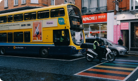
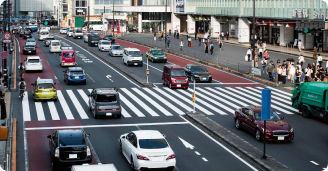
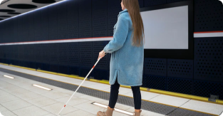

Para você

Acessibilidade no transporte público
Clarissa Sampaio

Acessibilidade no transporte público
Barbara Francez
Acessibilidade no transporte público
Paulo Amorim
Acessibilidade no transporte público
Camila M.
Destaques
Você está pensando em acessibilidade?
Camila M.
Exercício da Cidadania
Paulo Amorim

Soluções para mobilidade urbana
Barbara Francez
Política Nacional de Mobilidade
Clarissa Sampaio
Pessoas


Novidades
Problemas de acessibilidade na mobilidade urbana
Paulo Amorim
Como você pode ajudar pessoas com deficiencia no transito?
Camila M.

Espaços públicos
Clarissa Sampaio

Adaptações
Barbara Francez